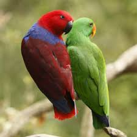
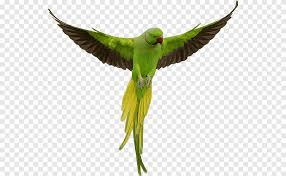

o que são os pisitacidios
pisitacidios são uma familia de aves, encontrada em diferentes egiões com a maior diversidade na america do sul concentra no Brasil ,
Colombia ,Venezuela e outros paise no norte da america do sul
historia dos pisitacidios
A sua origem evolutiva remontará há mais de 65 milhões de anos, ainda durante a era dos dinossauros, possivelmente no território que hoje corresponde à
Austrália, na altura parte do supercontinente Gondwana, que englobava a maior parte das massas que hoje correspondem ao hemisfério Sul do nosso pais
